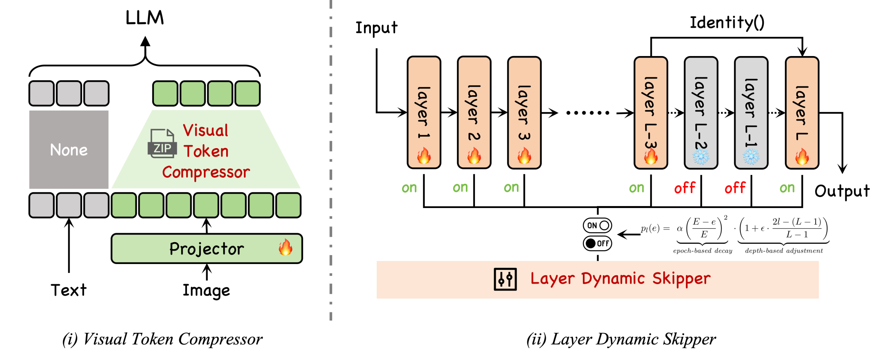

Short Bio
Hello! I am Kean Shi, a first-year master student at Peking University (School of Computer Science), supervised by Prof. Baobao Chang. Prior to this, I received my bachelor degree in Computer Science from Tianjin University in 2025.
My research interests lie at the intersection of Agentic AI, GUI Agent and Multimodal Large Language Model (MLLM). Now I am a research intern at UniPat AI . And I was also fortunate to collaborate with researchers from 0G  and UIUC .
and UIUC .
😁😉 Feel free to contact me for a chat or collaboration!
Recent News
- [Sep 2025] Our proposed STS was released to arXiv, check it out!
- [Jul 2025] Graduated from Tianjin University!
- [Sep 2024] Recommended to Peking University towards the M.S degree!
Research
-

Sparse Training Scheme for Multimodal LLM
Kean Shi, Liang Chen, Haozhe Zhao, Baobao ChangTraining MLLMs is often inefficient due to the significantly longer input sequences introduced by multimodal data and the low utilization of inter-layer computations. To address this challenge, we shift the focus to the training process itself and propose a novel training-efficient framework based on sparse representations, termed the Sparse Training Scheme (STS).
Experience
-
UniPat AI
Research Intern, Beijing Jan. 2025 - Now
-

Xiaomi Inc.
Engineering Intern Apr. 2024 - Jul. 2024
Education
-

Peking University
School of Computer Science, supervised by Prof. Baobao Chang
M.S in Computer Science Sep. 2025 - Now
-

Tianjin University
College of Intelligence and Computing
B.Eng in Computer Science Sep. 2021 - Jun. 2025
-

Tianjin Nankai High School
Senior High School Sep. 2018 - Jun. 2021
Selected Awards
- Outstanding Graduate Student Jul. 2025
- National Scholarship of undergraduate student (Top 1‰ in China) Dec. 2024
Services
- Teacher assistant of "Introduction to Computing (C)" at EECS, PKU